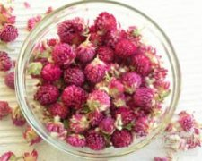

千日红

拼音
Qiān Rì Hónɡ
别名
百日红、千日白、千年红、蜻蜓红
来源
为苋科千日红属植物千日红Gomphrena globosa L.，以花序入药。夏、秋采摘花序，晒干。
生境分布
全国各地均有栽培。
药材特点
一年生草本，高20~60厘米，全株密被白色长毛。茎直立，有分枝，近四棱形，具沟纹，节部膨大，带紫红色，密被白色柔毛。单叶对生，叶柄长约1厘米，上端叶几无柄；叶片长圆形至椭圆形，长5~10厘米，宽2~4厘米，先端钝或尖，基部楔形，全缘，两面被白色长柔毛和缘毛。夏季开紫红色、白色或淡红色花，头状花序球形或长圆形，通常单生于枝顶，有时2~3花序并生，花序直径约2厘米，总苞2枚，叶状，每花基部有干膜质卵形苞片1枚，三角状披针形小苞片2枚，小苞片紫红色，背棱有显明细锯齿，花被片披针形，外面密被白色绵毛，花丝合生成管状，先端5裂。胞果近球形。
性状
干燥花序呈球形或长圆球形，通常单生，长2～2.5厘米，直径1.5～2厘米，由多数花集合而成；花序基部具2枚叶状圃三角形的总苞片，绿色，总苞片的背面密被细长的白柔毛，腹面的毛短而稀；每花有膜质苞2片，带红色。气微弱，无味。以洁白鲜红或紫红色，花头大而均匀者为佳。
性味
甘，平。
功能主治
止咳平喘，平肝明目。用于支气管哮喘，急、慢性支气管炎，百日咳，肺结核咯血，头晕，视物模糊，痢疾。
用法用量
3～5钱。
化学成分
紫色花序冰水提取物中含有β-花青甙类；千日红甙Ⅰ(gomphreninⅠ)和千日红甙Ⅱ（gomphreninⅡ）及五种为千日红甙Ⅰ或Ⅱ的羟芳酰基衍生物，结构已确定的有千日红甙Ⅲ、Ⅴ、Ⅵ（gomp-hreninⅢ、Ⅴ、Ⅵ）。此外，尚含皂甙及少量苋菜红素（amaranthin）和异苋菜红素（isoamaranthin）等。
药理作用
1：其皂甙和黄铜部分能祛痰
摘录
《全国中草药汇编》